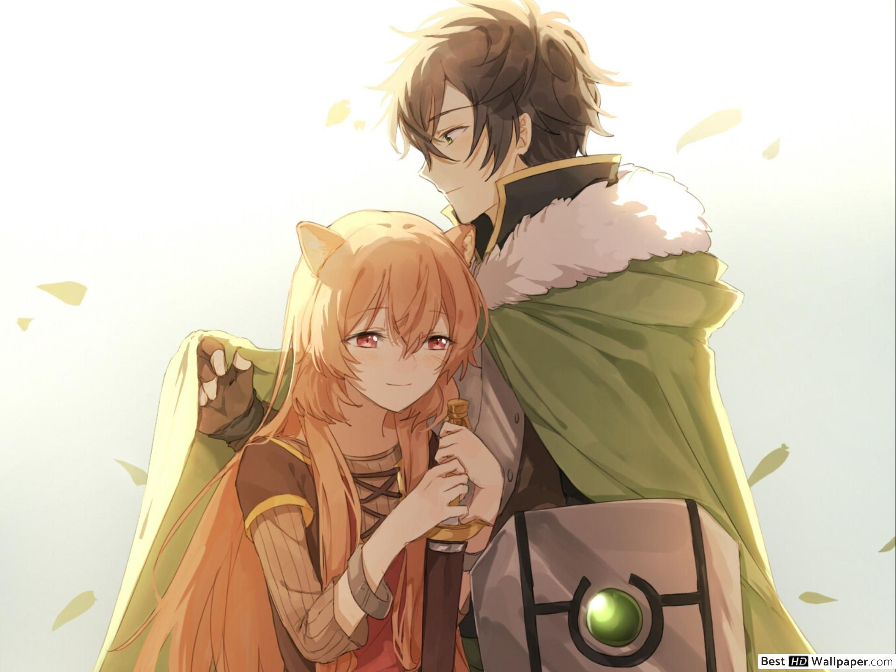
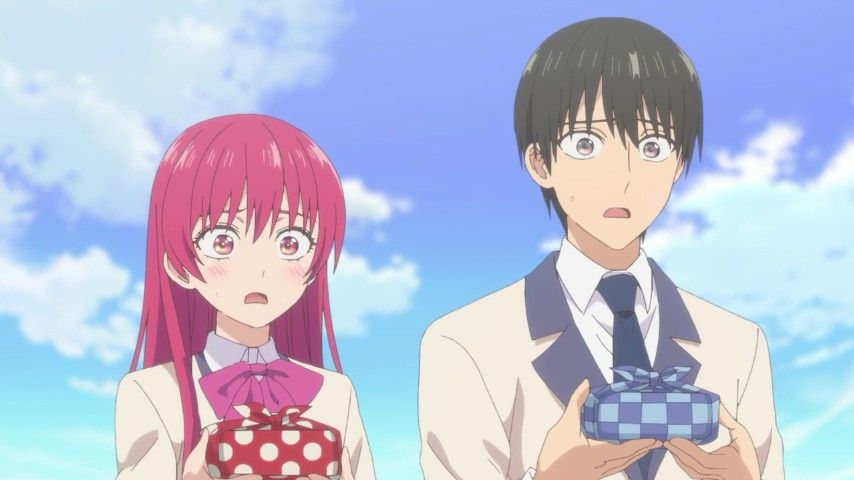
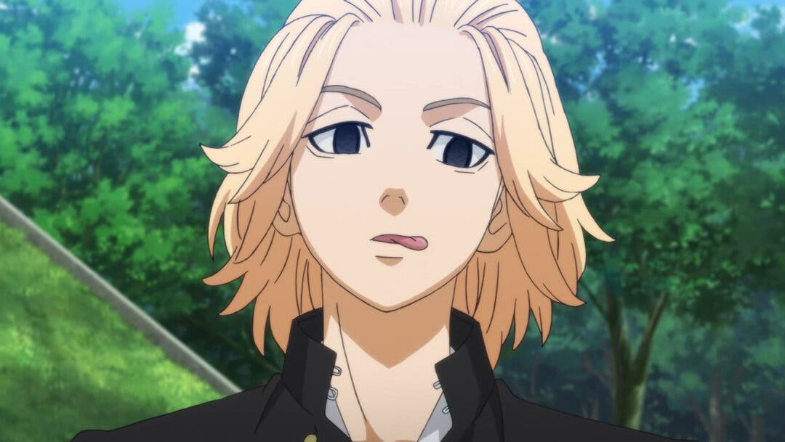
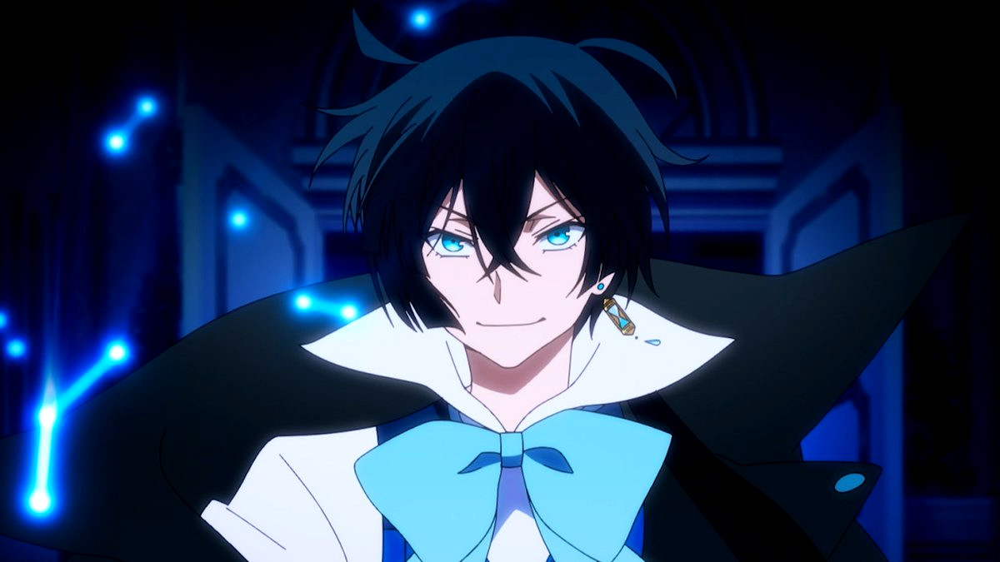

Mihoyo celebra el cumpleaños de ningguang

Tate no yuusha revela trailer para su segunda temporada
Reseñas

Reseña Kanojo mo Kanojo - Capitulo 5
Otro capitulo mas de otra serie de romance mas... no se que mas decir. Vayan a verlo si se sienten solos y tiene alguna necesidad en sus vidas.

¿Vale la pena Tokyo Revengers?
Tokyo Revenger. Del manga que muchas personas amaron acaba de terminar su emision y las opiniones parecen estar muy divididas. ¿Por que?
